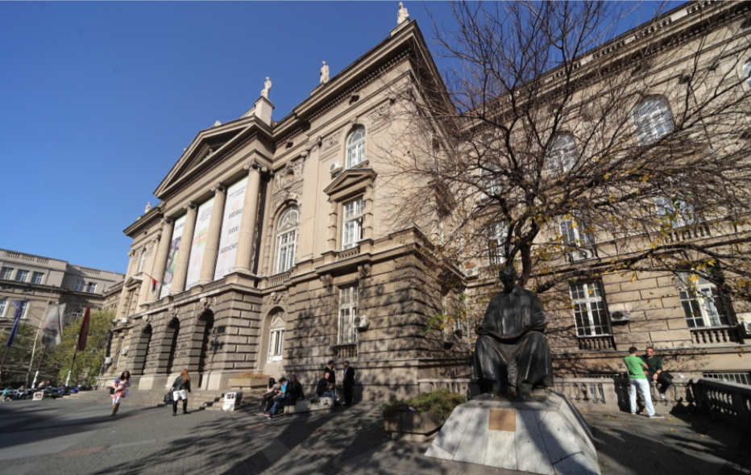
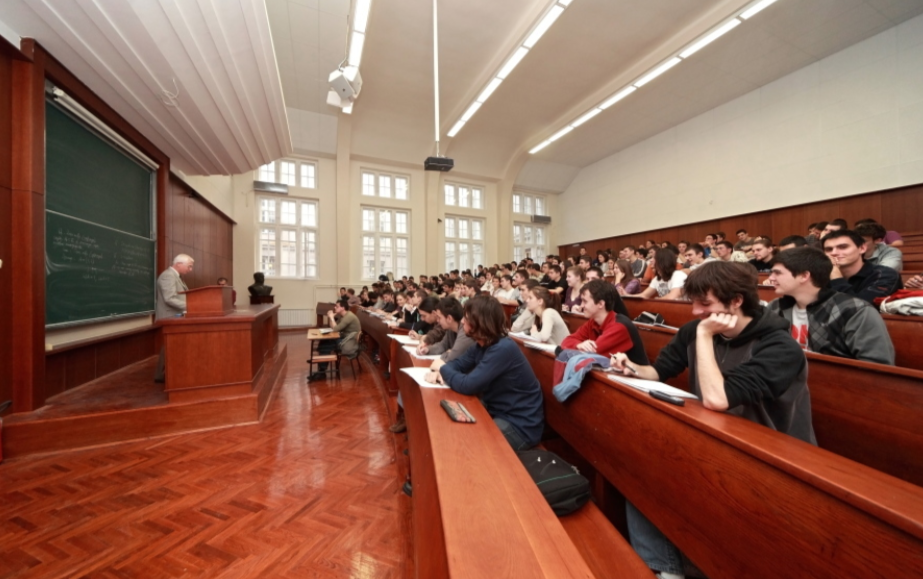
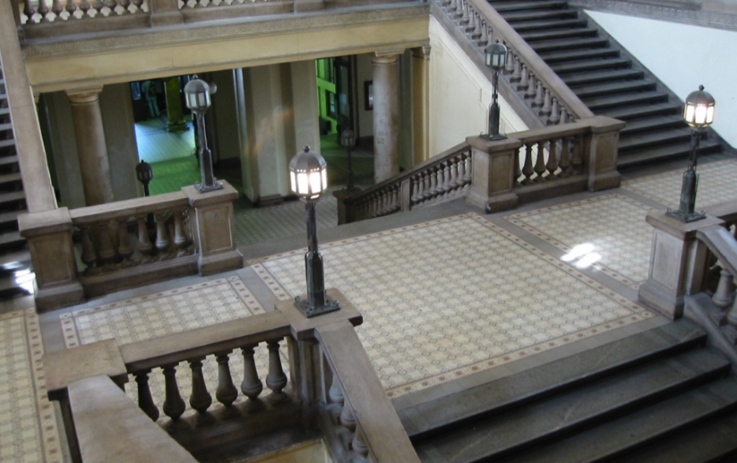

<div class="container">
    <div class="row">
        <div class="col-lg-6">
            <div id="carouselExampleControls" class="carousel slide" data-ride="carousel">
                <div class="carousel-inner">
                    <div class="carousel-item active">
                        
                    </div>
                    <div class="carousel-item">
                        
                    </div>
                    <div class="carousel-item">
                        
                    </div>
                </div>
                <a class="carousel-control-prev" href="#carouselExampleControls" role="button" data-slide="prev">
                    <span class="carousel-control-prev-icon" aria-hidden="true"></span>
                    <span class="sr-only">Previous</span>
                </a>
                <a class="carousel-control-next" href="#carouselExampleControls" role="button" data-slide="next">
                    <span class="carousel-control-next-icon" aria-hidden="true"></span>
                    <span class="sr-only">Next</span>
                </a>
            </div>
        </div>
        <div class="col-lg-6">
            <div>
                <h2 class="text-center mt-2">O ETF-u</h2>
                <br>
                <p class="text-justify">
                    Danas je Elektrotehnički fakultet vrhunska obrazovna i naučna institucija za oblast elektrotehnike i
                    računarstva, koja obavlja delatnosti za koje je registrovana u skladu sa Zakonom o visokom
                    obrazovanju, Zakonom o naučno-istraživačkoj delatnosti i drugim važećim propisima. Delatnosti kojima
                    se bavi Elektrotehnički fakultet preciznije su definisane Statutom Elektrotehničkog fakulteta i
                    Statutom Univerziteta u Beogradu.

                    Elektrotehnički fakultet obavlja svoju obrazovnu delatnost kroz četiri studijska programa, i to: dva
                    programa osnovnih akademskih studije, jedan program master akademskih studija i jedan program
                    doktorskih akademskih studija. Studijski programi za sva tri nivoa studija su usvojeni po proceduri
                    koju propisuju Zakon o visokom obrazovanju, Statut Univerziteta u Beogradu i Statut Elektrotehničkog
                    fakulteta.
                </p>
            </div>
        </div>
    </div>

</div>